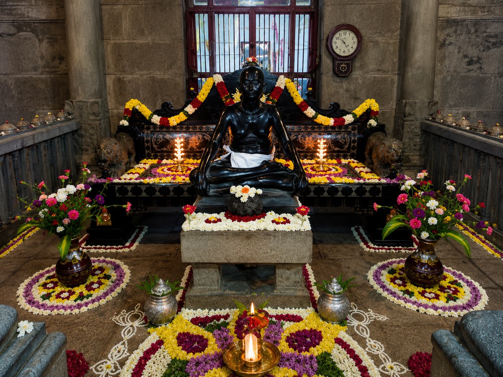

Sri Ramana Ashramam
Sri Ramana Ashramam is one of the most peaceful and spiritually important places in Tiruvannamalai. It is dedicated to Bhagavan Sri Ramana Maharshi, who taught self-enquiry and inner silence.
Devotees visit the ashram for meditation, prayer, spiritual guidance and peace of mind.
Famous For: Meditation, Ramana Maharshi Samadhi and peaceful surroundings
Distance: Around 2 km from Arunachaleswarar Temple
Best Time: Morning and evening
